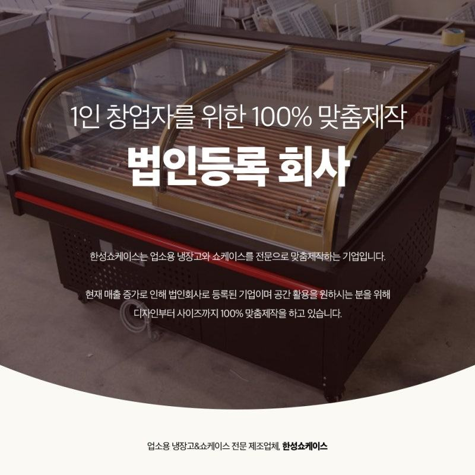
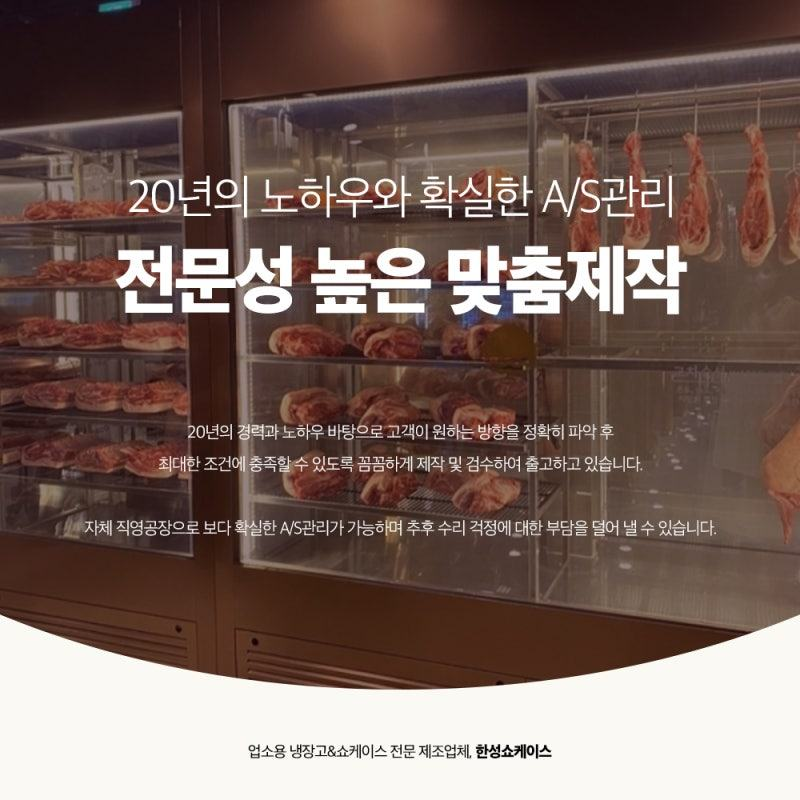
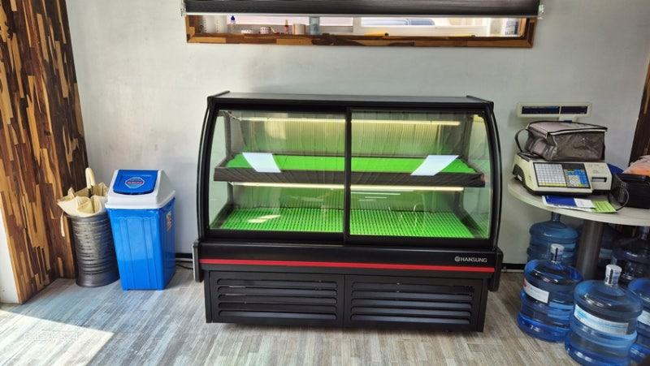
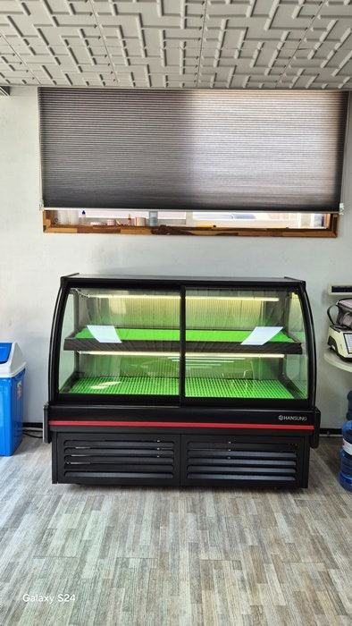

정육쇼케이스
정육쇼케이스 설치, 자리 정하기 전 확인할 다섯 가지

정육쇼케이스는 다른 진열장보다 크고 무거워서 설치 자리와 반입 경로를 먼저 확정해야 합니다. 바닥 수평과 전용 전원, 기계 열이 빠질 공간, 손질 작업대와 저울까지의 거리를 미리 맞춰 두면 설치 당일 위치를 다시 옮기는 일이 없습니다.
안녕하세요. 정육점 냉장 진열장을 매장 구조에 맞춰 설계하는 한성쇼케이스입니다.
정육점 오픈 준비가 막바지에 이르면 "쇼케이스는 그냥 저 벽에 붙이면 되겠죠?" 하시는 사장님이 많습니다.
그런데 설치 기사님이 도착해서야 콘센트가 반대편에 있거나, 바닥이 기울어 있거나, 출입문으로 들어가지 않는다는 걸 알게 되는 경우가 적지 않습니다.
정육쇼케이스는 매장 전면을 거의 다 차지하는 큰 장비이고, 한 번 자리를 잡으면 다시 옮기기 어렵습니다.
고기 손질 작업과 손님 응대가 모두 이 앞에서 이뤄지니 자리 하나가 하루 일의 동선을 정합니다.
오늘은 정육쇼케이스 설치 전에 확인해야 할 다섯 가지를 순서대로 정리해 드리겠습니다.
1. 자리와 작업 동선
정육점은 뒤쪽 작업실에서 고기를 손질해 쇼케이스 뒤로 채우고, 앞쪽에서 손님에게 부위를 보여 주며 판매합니다.
쇼케이스 뒷면과 작업대, 저울, 포장대가 몇 걸음 안에 모여 있어야 하루 수십 번의 왕복이 덜 피곤합니다.
손님 쪽은 매장 입구에서 쇼케이스 전면이 한눈에 들어오는 배치가 좋습니다. 기둥이나 냉동고가 시야를 가리지 않는지 입구에 서서 확인해 보세요.
- 쇼케이스 뒤 작업 통로 폭을 정해 두세요.
- 저울과 포장대가 놓일 자리를 함께 표시하세요.
2. 반입 경로와 바닥 수평
정육쇼케이스는 길이가 길어 출입문, 복도, 모퉁이에서 걸리는 경우가 있습니다. 계약 전에 출입문 폭과 높이, 꺾이는 구간을 재서 알려 주시면 분리 제작이나 반입 방법을 미리 정할 수 있습니다.
바닥이 기울어 있으면 문이 저절로 열리거나 배수가 한쪽으로 고입니다. 바닥 공사를 마친 뒤 수평을 한 번 확인해 두시고, 타일 줄눈이 높은 자리라면 받침 조정이 필요할 수 있습니다.


3. 전원과 배수
정육쇼케이스는 하루 종일 쉬지 않고 돌아가기 때문에 다른 장비와 콘센트를 나눠 쓰면 차단기가 떨어지거나 전원이 불안정해질 수 있습니다.
전용 회로와 콘센트 위치를 인테리어 단계에서 쇼케이스 자리에 맞춰 빼 두세요.
제상수가 빠지는 방식도 확인해야 합니다. 배수 구멍 위치가 맞지 않으면 설치 당일 바닥을 다시 뚫어야 하는 일이 생깁니다.
- 전용 콘센트를 쇼케이스 기계실 쪽으로 빼 두세요.
- 배수 방식과 배수구 위치를 미리 확인하세요.
4. 열 배출과 주변 열원
기계실에서 나오는 열이 빠질 공간이 없으면 여름철 냉기가 약해지고 콤프레셔 수명도 짧아집니다. 벽이나 카운터에 꽉 끼워 넣지 말고 통풍 공간을 남겨 두세요.
고기를 굽는 시식대, 포장 기계, 창가 직사광선처럼 열이 나는 곳과도 거리를 두는 것이 좋습니다. 특히 유리면에 햇빛이 오래 닿으면 고기 표면 색이 빨리 변할 수 있습니다.
5. 설치 당일 확인할 것
설치가 끝나면 바로 고기를 채우기보다, 설정 온도까지 충분히 내려가는지 먼저 확인하세요. 조명 색이 고기 색을 자연스럽게 보이게 하는지, 문이 부드럽게 여닫히는지, 기계 소음이 손님 쪽으로 크게 들리지 않는지도 함께 보시면 좋습니다.
처음 며칠은 아침과 마감 때 온도를 적어 두면, 나중에 이상이 생겼을 때 평소와 비교하기가 훨씬 쉬워집니다.
사용 설명과 A/S 접수 방법도 설치 기사님께 그 자리에서 함께 확인해 두세요.
체크리스트
- 쇼케이스·작업대·저울·포장대 동선
- 출입문 폭과 반입 경로
- 바닥 수평과 배수 방식
- 전용 회로와 콘센트 위치
- 기계 열 배출 공간과 주변 열원
현장에서 자주 보는 경우: 기성 규격이 매장 구조와 맞지 않을 때
정육쇼케이스는 다른 진열장보다 크게 만들어야 하고 여러 대가 필요한 경우도 많습니다. 그런데 널리 알려진 기성 제품은 규격이 정해져 있어, 매장 구조와 맞지 않는 크기를 들이고 공간을 버리게 되는 경우를 자주 봅니다.
이런 매장은 쇼케이스가 놓일 자리와 구조를 먼저 보고 디자인과 크기를 맞춰 제작했습니다. 경력이 오래된 직원이 직접 매장에 와서 치수를 재고 설치까지 맡았으며, 생산을 함께 진행해 사장님이 원하신 날짜에 받으실 수 있도록 일정을 맞췄습니다.
설치 후에는 정기 점검으로 문제가 되는 부분을 바로 손보도록 했습니다.





자주 묻는 질문
설치 전에 매장에 실측을 와 주시나요?
치수를 직접 재고 설치 자리와 반입 경로를 확인한 뒤 제작을 진행합니다. 인테리어 공정 일정과 함께 말씀해 주시면 방문 일정을 맞춰 드립니다.
기존 정육쇼케이스를 빼고 새로 넣을 수 있나요?
가능합니다. 기존 제품의 크기와 전원·배수 위치를 알려 주시면 새 제품을 그 조건에 맞출지, 자리를 조정할지 함께 정해 드립니다.
설치 후 고장이 나면 어떻게 하나요?
대표전화 031-986-2458로 접수하시면 됩니다. 한성쇼케이스는 전국 240여 개 A/S 센터를 운영하고 있어 지역 매장도 대응합니다.
매장 조건에 맞춰 만드는 한성쇼케이스
원하시는 제품 사진과 설치할 공간 사진만 보내 주셔도 매장에 맞는 구성을 추천해 드립니다.
- 전국 240여 개 A/S 전담 센터 운영
- 본사 대량 자재 매입으로 품질 대비 합리적인 가격
- 유럽제·삼성 냉각 콤프레셔 적용
- 국내 최초 쇼케이스 전문 디자이너 상주
매장 폭과 원하는 진열 구성을 알려 주세요. 실측과 견적을 안내해 드립니다.
031-986-2458